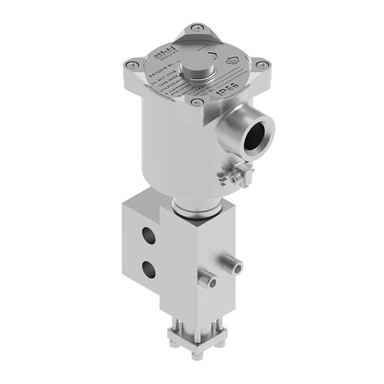

Bifold (thuộc danh mục Rotork) sản xuất solenoid valve pneumatic dùng cho hệ thống điều khiển khí nén trong công nghiệp, gồm hai nhóm chính: direct-acting (FP03P, FP06P, FP10P, FP12P) và indirect-acting (BXS, SPR, PPV). Range này cũng dùng được cho ứng dụng thủy lực áp suất thấp. Bài viết so sánh hai nhóm theo media, áp suất, cấu hình cổng và yêu cầu an toàn/khu vực nguy hiểm.

Trả lời nhanh
- Direct-acting (FP03P/FP06P/FP10P/FP12P): flow rate 0,1-2,5 Cv, cấu hình 2/2 và 3/2, áp suất tối đa từ 145 psi đến 725 psi tùy model.
- Indirect-acting (BXS/SPR/PPV): flow rate tới 11,2 Cv, cấu hình 2/2, 3/2, 5/2 và 5/3 (BXS), áp suất tối đa 145 psi/10 bar.
- Vật liệu chuẩn: 316L stainless steel (có tùy chọn nhôm), chịu media từ -60°C đến +130°C tùy loại seal.
- Chứng nhận Ex: Ex emb, Ex d, Ex ia, Explosionproof và Safe Area — theo enclosure series cụ thể (24, 27, 28, 58, 78, 130, 140).
- FP03P, FP06P, FP10P, BXS và SPR có khả năng SIL 3 theo IEC 61508; tiêu thụ điện dưới 1,0 W liên tục, phù hợp ứng dụng năng lượng mặt trời.
Bảng so sánh direct-acting và indirect-acting
| Model | Cấu hình | Flow rate (Cv) | Áp suất tối đa |
|---|---|---|---|
| FP03P | 2/2, 3/2 | 0,1 | 145 psi / 10 bar |
| FP06P | 2/2, 3/2 | 0,32–1,2 | 232 psi / 16 bar |
| FP10P | 2/2, 3/2 | 0,4–1,2 | 725 psi / 50 bar |
| FP12P | 2/2, 3/2 | 2,5 | 145 psi / 10 bar |
| BXS | 2/2, 3/2, 5/2, 5/3 | 0,73 | 145 psi / 10 bar |
| SPR / PPV | 2/2, 3/2, 5/2 | 2,0–11,2 | 145 psi / 10 bar |
Tiêu chí chọn solenoid valve Bifold
- Flow rate và cấu hình cổng: nếu cần lưu lượng cao hoặc cấu hình 5/2, 5/3, chọn nhóm indirect-acting (BXS/SPR/PPV); nếu chỉ cần 2/2 hoặc 3/2 lưu lượng thấp, direct-acting (FP series) thường đủ.
- Áp suất làm việc: nếu cần áp suất cao (tới 725 psi/50 bar), chọn FP10P; các model khác giới hạn ở 145-232 psi.
- Khu vực lắp đặt: xác nhận enclosure series phù hợp: Ex emb (24, 74AT4), Ex d (27, 77), Ex ia (28, 58, 78, 140) hoặc Safe Area (130).
- Yêu cầu SIL: nếu hệ thống cần chứng nhận SIL, xác nhận model có khả năng SIL 3 (FP03P, FP06P, FP10P, BXS, SPR) và lấy certificate phù hợp cấu hình.
- Media và nhiệt độ: xác nhận loại seal (NBR/HNBR/FKM/FVMQ/FFKM) phù hợp media và dải nhiệt độ thực tế (-60°C đến +130°C tùy seal).
- Nguồn điện: xác nhận điện áp coil (12-240 VDC hoặc 24-240 VAC) và công suất phù hợp hệ thống, đặc biệt nếu dùng nguồn năng lượng mặt trời (dưới 1,0 W liên tục).
Model và range liên quan
| Model/range | Lý do liên quan | Trang sản phẩm |
|---|---|---|
| Bifold Pneumatic Solenoid Valves | Range chính trong bài (FP/BXS/SPR/PPV) | Bifold Pneumatic Solenoid Valves |
| Instrumentation Valves (nhóm) | Danh mục instrumentation valve tổng quát của Bifold | Instrumentation Valves Rotork |
| Bifold ball/needle valve | Phụ kiện instrumentation valve thường dùng cùng hệ thống solenoid | Bifold ball và needle valve Rotork |
Mua solenoid valve Bifold chính hãng tại Việt Nam
Fast Group Engineering là đơn vị cung cấp sản phẩm Rotork chính hãng tại Việt Nam, đầy đủ giấy tờ CO/CQ, catalogue và datasheet theo từng lô hàng. Đội ngũ kỹ thuật hỗ trợ đối chiếu model, enclosure series và chứng nhận Ex trước khi báo giá.
Câu hỏi thường gặp
Solenoid valve direct-acting và indirect-acting khác nhau ở đâu?
Direct-acting (FP03P, FP06P, FP10P, FP12P) có flow rate thấp hơn (0,1-2,5 Cv) nhưng cấu trúc đơn giản hơn. Indirect-acting (BXS, SPR, PPV) hỗ trợ nhiều cấu hình hơn (2/2, 3/2, 5/2, 5/3) và flow rate cao hơn (tới 11,2 Cv), phù hợp ứng dụng cần lưu lượng lớn hoặc logic chuyển mạch phức tạp hơn.
Solenoid valve Bifold có dùng được cho khu vực nguy hiểm không?
Có. Range này có các cấp chứng nhận Ex emb, Ex d, Ex ia và Explosionproof, cùng phiên bản Safe Area, theo tài liệu kỹ thuật hiện hành. Chứng nhận cụ thể (ATEX/IECEx) khác nhau theo enclosure series (24, 27, 28, 58, 78, 130, 140) — cần xác nhận đúng series cho khu vực lắp đặt.
Solenoid valve Bifold có đạt SIL không?
FP03P, FP06P, FP10P, BXS và SPR có khả năng SIL 3 theo quy trình thiết kế phù hợp IEC 61508, theo tài liệu kỹ thuật hiện hành. Mức SIL áp dụng cho hệ thống cụ thể cần xác nhận qua certificate và phân tích SIS của dự án.
Áp suất làm việc tối đa của solenoid valve Bifold là bao nhiêu?
Tùy model: FP03P tới 145 psi/10 bar, FP06P tới 232 psi/16 bar, FP10P tới 725 psi/50 bar, FP12P và BXS/SPR/PPV tới 145 psi/10 bar. FP10P có áp suất làm việc cao nhất trong nhóm direct-acting.
Cần gửi thông tin gì để chọn đúng solenoid valve Bifold?
Gửi loại media (khí/nước/dầu), áp suất làm việc, cấu hình cổng cần (2/2, 3/2, 5/2...), khu vực lắp đặt (safe/hazardous, zone/class cụ thể), điện áp cuộn coil và yêu cầu SIL cho Fast Group Engineering để đối chiếu trước khi báo giá.
Gửi yêu cầu hệ thống khí nén để chọn đúng solenoid valve Bifold
Để kiểm tra đúng mã, vui lòng gửi media, áp suất, cấu hình cổng, khu vực lắp đặt và yêu cầu SIL cho Fast Group Engineering qua Zalo/điện thoại (+84) 938 888 958 hoặc email minhduc@fastgroup.vn.
Nguồn tham khảo
- PUB171-001, 07 Pneumatic Solenoid Valves — trang 4 (overview, market sectors), trang 9-10 (bảng flow rate/áp suất FP03P-FP12P, BXS, SPR/PPV), trang 11-13 (technical specifications, enclosure/hazardous area certification, SIL 3 capability).
Ghi chú nội bộ: bài chưa đối chiếu PUB135-006 (Bifold Product Overview & Portfolio) phần chi tiết 70+ trang chưa đọc — nếu cần thêm model ngoài FP/BXS/SPR/PPV (ví dụ phiên bản hydraulic chuyên biệt), reviewer nên tra theo mục lục PUB135-006 trước khi bổ sung.